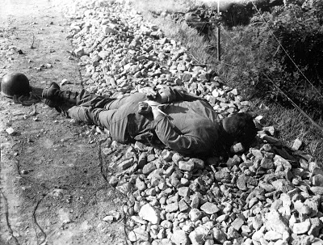

"Smith & Wesson reported a 20% increase in net sales to a record $412 million for its full fiscal year, which ended April 30." Maybe there's a strategic military fact about the armed citizenry and its mood somewhere in here?
Saturday, June 30, 2012
Smith and Wesson stock surges on strong sales & earnings.
"Time for Americans to dust off their guns?"

Jeff Knox reminds us we're coming up on National Training Week.
Friday, June 29, 2012
CBS: Fast and Furious whistleblowers now supervised by ATF manager who allegedly threatened retaliation.
"ATF needs to f__k these guys."
Here's the letter from Grassley and Issa on the subject.
Issa sneaks wiretap info into the Congressional Record! Transcript of redacted letter for myopic Media Matters mokes provided courtesy of Sipsey Street Irregulars.
First off, here's a big surprise. FOX reports: "Justice Department shields Holder from prosecution after contempt vote."
Meanwhile, The Blaze has this interesting tidbit "Issa Pulls a Cunning Move to Detail Secret ‘Fast and Furious’ Wiretap Applications," referencing a story in Roll Call, "Darrell Issa Puts Details of Secret Wiretap Applications in Congressional Record."
In the midst of a fiery floor debate over contempt proceedings for Attorney General Eric Holder, House Oversight and Government Reform Chairman Darrell Issa (R-Calif.) quietly dropped a bombshell letter into the Congressional Record.The May 24 letter to Rep. Elijah Cummings (D-Md.), ranking member on the panel, quotes from and describes in detail a secret wiretap application that has become a point of debate in the GOP’s “Fast and Furious” gun-walking probe.The wiretap applications are under court seal, and releasing such information to the public would ordinarily be illegal. But Issa appears to be protected by the Speech or Debate Clause in the Constitution, which offers immunity for Congressional speech, especially on a chamber’s floor.According to the letter, the wiretap applications contained a startling amount of detail about the operation, which would have tipped off anyone who read them closely about what tactics were being used.Holder and Cummings have both maintained that the wiretap applications did not contain such details and that the applications were reviewed narrowly for probable cause, not for whether any investigatory tactics contained followed Justice Department policy.The wiretap applications were signed by senior DOJ officials in the department’s criminal division, including Deputy Assistant Attorney General Jason Weinstein, Deputy Assistant Attorney General Kenneth Blanco and another official who is now deceased.
Here is CBS' take: GOP says wiretaps revealed 'Gunwalking' early on.
The letter, boys and girls, is found on Page 232 of this entry in the Congressional Record. I have transcribed here for the benefit of any myopic Media Matters mokes who may try to use the excuse that they couldn't read it.
COMMITTEE ON OVERSIGHT AND GOVERNMENT REFORMWashington, DC, May 24, 2012Hon. ELIJAH E. CUMMINGS, Ranking Member, Committee on Oversight and Government Reform, House of Representatives, Washington, DC.DEAR RANKING MEMBER CUMMINGS:Last February, I joined Senator Grassley in investigating Operation Fast and Furious, the reckless and fundamentally flawed program conducted by the Phoenix Field Division of the Bureau of Alcohol, Tobacco, Firearms,and Explosives (ATF). As you know, during Fast and Furious, ATF agents let straw purchasers illegally acquire hundreds of firearms and walk away from Phoenix gun stores. The misguided goal of this operation was to allow the U.S.-based associates of a Mexican drug cartel to acquire firearms so they could be traced back to the associates once the firearms were recovered at crime scenes. On December 15, 2010, two guns from the Fast and Furious operation were the only ones found at the scene of U.S. Border Patrol Agent Brian Terry’s murder.AN ORGANIZED CRIME DRUG ENFORCEMENT TASK FORCE (0CDETF) WIRETAP CASEOperation Fast and Furious got its name when it became an official Department of Justice Organized Crime Drug Enforcement Task Force (OCDETF) Strike Force case. The OCDETF designation resulted in funding for Fast and Furious from the Justice Department’s headquarters in Washington, D.C. The Strike Force designation meant that it would not be run by ATF, but would instead create a multi-agency task force led by the U.S. Attorney’s Office. The designation also meant that sophisticated law enforcement techniques such as the use of federal wire intercepts, or wiretaps, would be employed.Federal wiretaps are governed by Title III of the Omnibus Crime Control and Safe Streets Act, and are sometimes referred to as ‘‘T–IIIs.’’ The use of federal wire intercepts requires a significant amount of case-related information to be sent to senior Department officials for review and approval. All applications for federal wiretaps are authorized under the authority of the Assistant Attorney General for the Criminal Division. In practice, a top deputy for the Assistant Attorney General has final sign-off authority before the application is submitted to a federal judge for approval. This deputy must ensure that the wiretap application meets statutory requirements and Justice Department policy. The approval process includes a certification that the wiretap is necessary be-cause other investigative techniques have been insufficient. Therefore, making such a judgment requires a review of operational tactics. Since gunwalking was an investigative technique utilized in Fast and Furious, then either top deputies in the Criminal Division knew about the tactics employed as part of their effort to establish legal sufficiency for the application, or they approved the wiretap applications in a manner inconsistent with Department policies.From the beginning, ATF was transparent about its strategy. An internal ATF briefing paper used in preparation for the OCDETF application process explained as much:Currently our strategy is to allow the transfer of firearms to continue to take place, albeit at a much slower pace, in order to further the investigation and allow for the identification of co-conspirators who would continue to operate and illegally traffic firearms to Mexican DTOs which are perpetrating armed violence along the Southwest Border.* * * * *The ultimate goal is to secure a Federal T–III audio intercept to identify and prosecute all co-conspirators of the DTO. . . . Tracking the illegally-purchased guns after they left the premises of Federal Firearms Licensees (FFLs) would allow ATF and federal prosecutors to build a bigger case,one aimed at dismantling what was believed to be a complex firearms trafficking network. The task force failed, however, to track the firearms. Instead, according to the testimony of ATF agents, their supervisors ordered them to break off surveillance shortly after the guns left the gun stores or were transferred to unknown third parties. Many of the firearms purchased were next seen at crime scenes on both sides of the border.THE FAST AND FURIOUS GUN TRAFFICKING NETWORK WAS NOT COMPLEXWe now know the gun trafficking ring that Fast and Furious was designed to target was relatively straightforward. It involved approximately 40 straw purchasers; a money-man, Manuel Celis-Acosta (Acosta), and; two figures tied to Mexican cartels. Acosta and the cartel figures were the top criminals targeted by ATF and the U.S. Attorney’s Office.On January 19, 2011, 20 suspects were indicted, including Acosta and 19 of his straw buyers. In all, it is believed that the Fast and Furious network purchased approximately 2,000 firearms. An internal ATF document dated March 29, 2011, shows that of the indicted defendants, only a select few purchased the majority of the firearms, andnearly all of the purchases occurred afterATF knew that these defendants were straw purchasers working with Acosta. These four indicted defendants alone illegally purchased nearly 1,300 firearms: Uriel Patina (720), Sean Steward (290), Josh Moore (141), and Alfredo Celis (134).THE GOALS OF OUR INVESTIGATIONA central aim of our investigation has been to find out why and how such a dangerous plan could have been conceived, approved,and implemented. Who in ATF and the Justice Department knew about the volume of guns being purchased? Who approved of the case at various stages as it unfolded? Underwhose authority did this occur? Who could have — and should have — stopped it? By closely examining this disastrous program, our Committee hopes to prevent similar reckless operations from using dangerous tactics like gunwalking ever again. Our investigation also aims to determine what legislative actions might be necessary to ensure that such a program will not happen again.THE DEPARTMENT’S FAILURE TO COMPLY WITH THE COMMITTEE’S SUBPOENASOur Committee is still entitled to thousands of documents responsive to our subpoenas. These documents will undoubtedly shed more light on the misguided tactics used in Operation Fast and Furious. If the Justice Department changes course and complies with the Committee’s subpoenas, some of these documents will cover the targets of an FBI investigation of the individuals who were the link between the drug cartels and the Fast and Furious firearms trafficking ring. Other documents will chronicle the Department’s response to allegations of whistleblowers following Agent Terry’s death and how it shifted its position from the outright denial that there was any misconduct to the Department’s formal withdrawal of its false statement in December 2011. Most importantly, as you are well aware, we are still waiting for documents relating to the individuals who approved the tactics employed in Fast and Furious. In his recent letter to me, Deputy Attorney General James Cole asserted that such documents‘‘will not answer the question’’ of what senior officials were in fact notified of the unacceptable tactics used in Fast and Furious. This statement is deeply misleading. We are aware of specific documents that lay bare the fact that senior officials in the Department’s Criminal Division who were responsible for approving the applications in support of the Fast and Furious wiretap authorization requests were indeed made aware of these questionable tactics. Cole’s letter goes on to state that ‘‘Department leadership was unaware of the inappropriate tactics used in Fast and Furious until allegations about those tactics were made public in early 2011.’’ That statement is even more misleading and utterly false. The information provided to senior officials in the affidavits accompanying the wiretaps includes copious details of the reckless investigative techniques involved. Senior department leaders were not only aware of these tactics. They approved them.WIRETAP APPLICATION OBTAINED BY THE COMMITTEEThe Committee has obtained a copy of a Fast and Furious wiretap application, dated March 15, 2010. The application includes a memorandum dated March 10, 2010, from Assistant Attorney General of the Criminal Division Lanny A. Breuer to Paul M. O’Brien, Director, Office of Enforcement Operations, authorizing the wiretap application on behalf of the Attorney General. The memorandum from Breuer was marked specifically for the attention of Emory Hurley, the lead federal prosecutor for Operation Fast and Furious. In response to your personal request, I am enclosing a copy of the wiretap application. Please take every precaution to treat it carefully and responsibly. I am hopeful that it will assist you in understanding the information brought to the attention of senior officials in the Criminal Division charged with reviewing the contents of the applications to determine if they were legally sufficient and conformed to Justice Department policy. The information is as vast as it is specific. This wiretap application, signed by Deputy Assistant Attorney General Kenneth Blancounder the authority of his supervisor, Assistant Attorney General Breuer, provides new insight into who knew —or should have known — what and when in Operation Fast and Furious.To assist you in better understanding the facts, I appreciate the opportunity to provide relevant and necessary context for some of the information in this wiretap application. Due to the sensitivity of the document, individual targets and suspects will be referred to with anonymous designations. You will notice, however, that the individuals referred to in the wiretap application are well-known to our investigation. Although senior Department officials authorized this application on March 15, 2010, a mere four months after the investigation began, it contains a breathtaking amount of detail.The detailed information about the operational tactics contained in the applications raises new questions about statements of senior Justice Department officials, including the Attorney General himself. Before the Senate Judiciary Committee on November 8,2011, the Attorney General testified:"I don’t think the wiretap applications—I’ve not seen—I’ve not seen them. But I don’t know — I don’t have any information that indicates that those wiretap applications had anything in them that talked about the tactics that have made this such a bone of contention and have legitimately raised the concern of members of Congress, as well as those of us in the Justice Department. I—I’d be surprised if the tactics themselves about gun walking were actually contained in those — in those applications. I have not seen them, but I would be surprise[d] [if that] were the case."At a hearing before our Committee on February 2, 2012, the Attorney General also denied that any information relating to tactics appeared in the wiretap affidavits. He testified:"I think, first off, there is no indication that Mr. Breuer or my former deputy were aware of the tactics that were employed in this matter until everybody I think became aware of them, which is like January, February of last year. The information — I am not at this point aware that any of those tactics were contained in any of the wiretap applications."Contrary to the Attorney General’s statements, the enclosed wiretap affidavit contains clear information that agents were willfully allowing known straw buyers to acquire firearms for drug cartels and failing to interdict them - in some cases even allowing them to walk to Mexico. In particular, the affidavit explicitly describes the most controversial tactic of all: abandoning surveillance of known straw purchasers, resulting in the failure to interdict firearms. The Justice Department’s Office of Enforcement Operations reviews the wiretap applications to ensure that they are both legally sufficient and conform to Justice Department policy. Deputy Attorney General James M. Cole has verified this understanding. In a letter he sent to Congress on January 27, 2012, he stated that the Department’s ‘‘lawyers help AUSAs and trial attorneys ensure that their wiretap packages meet statutory requirements and DOJ policies."When Assistant Attorney General Breuer testified last November about the wiretap approval process, however, he stated:"[The role of the reviewers and the role of the deputy in reviewing Title Three applications is only one. It is to insure that there is legal sufficiency to make an application to go up on a wire, and legal sufficiency to petition a federal judge somewhere in the United States that we believe it is a credible re-quest. But we cannot — those now 22 lawyers that I have who review this in Washington — and it used to only be seven — can not and should not replace their judgment, nor can they, with the thousands of prosecutors and agents all over the country. Theirs is a legal analysis; is there a sufficient basis to make this request."Assistant Attorney General Breuer failed to acknowledge that before a wiretap application can be authorized, it must adhere to Justice Department policy. Yet, the operational tactics included in the enclosed wire-tap application — including abandoning surveillance and not interdicting firearms — violate Department policy.According to Deputy Attorney General Cole, operations allowing guns to cross the border do indeed violate Department policy. In an e-mail he sent to southwest border U.S. Attorneys on March 9,2011, Deputy Attorney General Cole stated,‘‘I want to reiterate the Department’s policy: We should not design or conduct under-cover operations which include guns crossing the border.’’The Committee understands the limitations of the Office of Enforcement Operations function. Nevertheless, when presented with alarming details such as those contained in this application, a sensible lawyer — vested with the important responsibility of recommending to the Assistant Attorney General whether a wiretap should be authorized - must raise the alarm. Senior officials reviewing the application for legal sufficiency and/or whether Justice Department policy was followed, however, failed to identify major problems that these manifold facts suggested.MARCH 2010 WIRETAP APPLICATION STATES THE MAIN SUSPECT HAD INTENT TO ACQUIRE FIREARMS FOR THE PURPOSE OF TRANSPORTING THEM TO MEXICOAccording to the wiretap application obtained by the Committee, as early as December 2009, the task force had identified the main suspect in Fast and Furious (Target 1),a figure well-known to our investigation. The affidavit provides transcripts of entire conversations obtained through a prior DEA wire intercept. These conversations demonstrate that key suspects in Operation Fast and Furious were running a firearms trafficking ring. In one conversation that took place on December 11, 2009, Unknown Person1 asks, ‘‘Can you hold them [firearms] for me there for a little while there?’’ Target 1 responds, ‘‘Well it’s that I do not want to have them at home, dude, because there is a lot of ... uh, it’s too much heat at my house.’’ Unknown Person 1 then asked where he could store the firearms and Target 1 responds, ‘‘[m]ake arrangements with that guy [Straw Purchaser X], call him back and make arrangements with him.’’ The affidavit acknowledges that while monitoring the DEA target telephone numbers, law enforcement officers intercepted calls that demonstrated that Target 1 was conspiring to purchase and transport firearms for the purpose of trafficking the firearms from the United States to Mexico.MARCH 2010 WIRETAP APPLICATION STATES THAT NEARLY 1,000 FIREARMS HAD ALREADY BEEN PURCHASED, AND THAT MANY WERE RECOVERED IN MEXICOThe Probable Cause section of the affidavit shows that ATF was aware that from September 2009 to March 15, 2010, Target I acquired at least 852 firearms valued at approximately $500,000 through straw purchasers. As of March 15, 2010, twenty-one straw purchasers had been identified. Between September 23, 2009, and January 27, 2010, 139 firearms purchased by these straw purchasers were recovered — 81 of which were in Mexico. These recoveries occurred one to 49 days after their purchase in Arizona.MARCH 2010 WIRETAP APPLICATION DESCRIBES HOW SMUGGLERS WERE BRINGING FIREARMS INTO MEXICOThe wiretap affidavit details that agents were well aware that large sums of money were being used to purchase a large number of firearms, many of which were flowing across the border. For example, in the span of one month, Straw Purchaser Z bought 241 firearms from just three cooperating FFL,s. Of those, at least 57 guns were recovered shortly thereafter either in the possession of others or at crime scenes on both sides of the border. The wiretap affidavit even shows that ATF agents knew the tactics the smugglers were using to bring the guns into Mexico. According to the affidavit:"The potential interceptees conspire with each other and others known to illegally traffic firearms to Mexico. The potential interceptees purchase firearms in Arizona and transport them to Mexico or a location in close proximity of the United States/Mexico border. The potential interceptees deliver the firearms to individual(s) both known and unknown who then transport them into Mexico and/or the potential interceptees transport the firearms across the border and deliver them to customers both known and unknown."The fact that ATF knew that Target 1 had acquired 852 firearms and had the present intent to move them to Mexico should have prompted Department officials to act. Department officials should have ensured that the firearms were interdicted immediately and that law enforcement took steps to disrupt any further straw purchasing and trafficking activities by Target 1. Similarly, by way of example, if Criminal Division attorneys were reviewing a wiretap affidavit that showed that human trafficking was taking place for the purpose of forcing humans into slavery, the attorneys should act to make sure such a practice would not continue. Accordingly, Target l’s activities should have provoked an immediate response by the Criminal Division to shut him and his net-work down.MARCH 2010 WIRETAP APPLICATION CONTAINS DETAILS OF DROPPED SURVEILLANCEThe wiretap affidavit also describes firearms purchases by individual straw purchasers. For example, Straw Purchaser Y purchased five AK–47 type firearms on December 10, 2009, and surveillance units observed Straw Purchaser Y travel from the FFL where he made the purchase to Target l’s residence. The next day, surveillance units observed Straw Purchaser Y purchase an additional 21 AK–47 type firearms, and within an hour, arrive at Target l’s home.On December 8, 2009, agents observed Straw Purchaser Z purchase 20 AK–47 type firearms. While Straw Purchaser Z was making this purchase, Z saw a commercial delivery truck arrive at the gun store with a shipment of an additional 20 AK–47 type fire-arms. Straw Purchaser Z then told FFL employees that he wanted to purchase those additional firearms. Later that same day,Straw Purchaser Z returned to the FFL to buy them. After Straw Purchaser Z left the FFL with the firearms, Phoenix police officers conducted a vehicle stop on Straw Purchaser Z’s vehicle and identified two of the passengers as Straw Purchaser Z and Target 1. The officers observed the firearms in the bed of the truck and asked the subjects about the firearms. Straw Purchaser Z told them he had purchased the firearms and they belonged to him. ATF agents continued surveillance until the vehicle arrived at Target l’s residence.The very next day, nine of these firearms were recovered during a police stop of a third person in Douglas, Arizona, on the U.S.-Mexico border. Five days later, Straw Purchaser Z bought another 43 firearms from an FFL. On December 24, 2009, Straw Purchaser Z bought even more firearms, purchasing 40 AK–47 type rifles from an FFL. All of these rifles were recovered on January 13, 2010, in El Paso, Texas, near the U.S./Mexico border. Although the individual found in possession of all these guns provided the first name of the purchaser, agents did not arrest the individual or the purchaser.Though the wiretap application states that agents were conducting surveillance of known straw purchasers, none of these weapons were interdicted. No arrests were made.MARCH 2010 WIRETAP DETAIL SHOW FAST AND FURIOUS FIREARMS HAD BEEN FOUND AT CRIME SCENES IN MEXICOThe wiretap affidavit also details the very short ‘‘time-to-crime’’ for many of the firearms purchased during Fast and Furious. For example, on November 6, 2009, November 12,2009, and November 14, 2009, Straw Purchaser Y purchased a total of 25 AK–47 type firearms from an FFL in Arizona. On November 20,2009 — just eight days later — Mexican officials recovered 17 of these firearms in Naco, Sonora, Mexico.Another straw purchaser,Straw Purchaser Q, purchased a total of 17 AK–47 type firearms from an FFL on November 3, 2009, November 10, 2009, and November 12, 2009. Then, on December 9, 2009, Mexican officials recovered 11 of these firearms in Mexicali, Baja California, Mexico, along with approximately 421 kilograms of cocaine, 60 kilograms of methamphetamine, 48 additional firearms, 392 ammunition cartridges,$2 million in U.S. currency, and $800,000 in Mexican currency. Once again, although ATF was aware of these facts, no one was arrested, and ATF failed to even approach the straw purchasers. Upon learning these details through its review of this wiretap affidavit, senior Justice Department officials had a duty to stop this operation. Further, failure to do so was a violation of Justice Department policy.STRAW PURCHASERS HAD MEAGER FINANCIAL MEANSThe affidavit provides details of the straw purchasers’ financial records. As of March 15,2010, just four straw purchasers had spent $373,206 in cash on firearms. Yet, these same straw purchasers had only minimal earnings in Fiscal Year (FY) 2009. Straw Purchaser Q earned $214 per week, while Straw Purchaser Y earned only $188 per week. Straw Purchaser Z earned $9,456.92 during FY 2009, and Straw Purchaser X did not report any income whatsoever.Name Money spent on firearms by 3/15/10 FY 2009 income*Straw Purchaser Y $128,580 $9,776Straw Purchaser Q 64,929 11,128Straw Purchaser X 39,663 None reportedStraw Purchaser Z 140,034 9,456Total $373,206*Incomes based on weekly incomes detailed in wiretap application.These straw purchasers did not have the financial means to spend tens of thousands of dollars each on guns. Yet, ATF allowed them to continue acquiring firearms without approaching them to inquire how they were able to obtain the funds to do so. ATF also failed to alert the FFLs with this information so that they could make more fully informed decisions as to whether to continue selling to these straw purchasers.CONCLUSIONThe wiretap affidavit reveals a remarkable amount of specific information about Operation Fast and Furious. The affidavit reveals that the Justice Department has been misrepresenting important facts to Congress and withholding critical details about Fast and Furious from the Committee for months on end. As the primary investigative arm of Congress, our Committee has a responsibility to demand answers from the Department and continue the investigation until we get all the facts.Sincerely,DARRELL ISSA, Chairman
David Codrea: Report points to CLINTON-ERA gunwalking.
The first official identified by name in the Fast and Furious gunwalking investigation has been tied to a similar Minnestoa operation in 1996 where “more than 150 guns flow[ed] into the Twin Cities underworld,” Kevin Diaz of the Star Tribune reported yesterday.
George Gillett, David Voth and B. Todd Jones, Oh My! It just goes to prove my point. When it comes to gunwalking and the ATF, personnel is policy.
Another country heard from . . .
In reaction to Black Thursday below, an atypical Media Matters reader (he doesn't curse, rave or spit) responds:
Anonymous said...How hysterically funny to read through the comments here! Real patriots do not overthrow duly elected and sworn governments.You all miss the fact that the ACA ruling will do far less damage than a couple of other 5-4 votes from SCOTUS.1) The appointment of George 'Dumbya' Bush as President2) Citizens United, allowing corporations to simply buy electionsWith all your seditious talk, with all of your talk about inciting violence, with all of your talk about 'taking your country back', you prove over and over again that NONE of you are actual patriots, and most of you aren't even worthy of being American citizens. Why not move to Somalia? There is no government there, and he with the most guns wins. You all should be right at home.Signed, The_Cat from MMfA
Like I said, two different countries.
David Hardy: If the House REALLY wants to press the contempt issue...

Of course the GOP lacks the stones, but . . .
There is the "inherent contempt" power, where the House orders the arrest of the defendant, and can try him then and there, and pass sentence. It hasn't been used since 1934, when the Senate sentenced a fellow who destroyed evidence to ten days in jail. It was upheld by the Supreme Court in Jurney v. MacCracken, 294 U.S. 125 (1935). ("Here, we are concerned, not with an extension of congressional privilege, but with vindication of the established and essential privilege of requiring the production of evidence. For this purpose, the power to punish for a past contempt is an appropriate means.") The House sends out its Sergeant-at-Arms to arrest the defendant, he is tried on the spot, and the House decides whether to convict.All the more ironic, in that not too many years ago the Demos were suggesting its use against a Republican administration. One pointed out that the the Capitol has an unused jail cell for just that occasion.
Thursday, June 28, 2012
Funny. Media Matters reacts to my Black Thursday post.

Dear Media Matters, if you are going to waste more of George Soros' money you should at least know the difference between shit and shinola. That's shinola on the right.
"Ex-Militia Blogger Who Spawned Fast And Furious Scandal Predicts Armed Insurrection Over Health Care Decision." Don't miss the comments, too. We really do understand them a lot better than they understand us. We recognize that they occupy an alternate worldview. They mere think we're isolated nuts that can be scooped up with a government butterfly net. They also seem to think that name-calling actually accomplishes something. "Now, go away or I shall taunt you a second time." They don't seem to understand that even if we are crazy, we are still armed and trained to the use of arms and that it is our kids who inhabit the U.S. military's tip-of-the-spear outfits because that's the way we raised them -- to service to God and country -- when they wouldn't dirty their collectivist hands doing so. Yet they expect us to fold at the sight of, according one commenter, a single police SWAT team. You know the FBI won't cooperate on some ops with a significant number of county sheriffs in this country because they can't trust them not to call us first. Yet these folks think they've got a pretty good bead on things when the truth is they don't know shit from shinola.
Today is a milepost only in the Gunwalker investigation. Hold all applause until the end of the scandal.

It's done. In truth, I never thought we'd get this far.
Holder's defiant.
Here's Issa's "Statement on Bipartisan Vote Holding Attorney General in Contempt over Refusal to Produce Fast and Furious Documents."
WASHINGTON – The U.S. House of Representatives has approved a resolution holding Attorney General Eric Holder in contempt of Congress over his refusal to produce Operation Fast and Furious documents subpoenaed last October. The vote on H.Res. 711, making a finding of contempt, was approved by a vote of 255 to 67. Seventeen Democrats crossed party lines to join the majority in the finding of contempt against Attorney General Eric Holder. The House is also scheduled to vote later today on H.Res. 706, authorizing civil action in courts to compel production of subpoenaed documents. House Oversight and Government Reform Committee Chairman Darrell Issa issued this statement following passage:
“Today, a bipartisan majority of the House of Representatives voted to hold Attorney General Eric Holder in contempt for his continued refusal to produce relevant documents in the investigation of Operation Fast and Furious. This was not the outcome I had sought and it could have been avoided had Attorney General Holder actually produced the subpoenaed documents he said he could provide.“The Congressional inquiry into Operation Fast and Furious, and the cover-up by Justice Department officials of wrongdoing, has been a fair and fact based investigation. False and partisan allegations by the White House and some congressional Democrats about the Oversight Committee’s efforts were undermined by the votes of 17 Democrats. These Members resisted the pressure of their own leadership and the Obama Administration to support this investigation on the House floor.“Claims by the Justice Department that it has fully cooperated with this investigation fall at odds with its conduct: issuing false denials to Congress when senior officials clearly knew about gunwalking, directing witnesses not to answer entire categories of questions, retaliating against whistleblowers, and producing only 7,600 documents while withholding over 100,000.“I greatly appreciate the ongoing efforts of Senator Chuck Grassley, his staff, and other Senators on the Judiciary Committee who have pressed the Obama Administration for the full truth. Senator Grassley began this investigation and has been a full partner throughout it. I must also recognize the hard work done by many of my colleagues here in the House – without their efforts the Justice Department’s stonewalling would have succeeded.“My message to my colleagues and others who have fought for answers: We are still fighting for the truth and accountability – for the family of murdered Border Patrol Agent Brian Terry, for whistleblowers who have faced retaliation, and for countless victims of Operation Fast and Furious in Mexico. Unless President Obama relents to this bipartisan call for transparency and an end to the cover-up, our fight will move to the courts where we will prevail in getting the documents that the Justice Department and President Obama’s flawed assertion of executive privilege have denied the American people.”
Been getting a lot of congrats from various quarters, some quite surprising. Now, it seems, I'm not so dangerous to talk to. I tell all of them, "Hold all applause until the end of the scandal." Because if you think this is done, it's not. Much more fighting for the truth and justice for the victims of Gunwalker looms. As always, our job is to ferret out the inconvenient truths and stiffen the spines of people who ought not need it. But I would be lying if I wasn't just a little bit proud of what we've accomplished so far.
BLACK THURSDAY
Regardless of what happens with the Holder contempt vote, today will likely be remembered by freedom-loving people as Black Thursday. My response to a reporter a few moments ago: "You may call tyranny a mandate or you may call it a tax, but it still is tyranny and invites the same response."

"Hey, what's the address o' the Supreme Court? I wanna write 'em a nasty letter."
LATER: The other day I did an interview which will appear, I am told, on Monday. Here is a relevant portion of that which deals with the decision today.
Question: You said in an interview with the Washington Post that a handful of Americans “are armed and are capable of making such resistance possible and perhaps even initiating a civil war.” Would you support a civil war over health care law?
"Initiating a civil war" is a misquote. All of my work has been focused on preventing a civil war by making the clueless understand that one is possible. Their Weltanschauungs prevent it. I'm trying to get them to understand that we are in fact two countries now. We share a common language (most of us) and border, but we disagree on the critical question that the Founders answered with defensive violence against King George's violence -- shall the people serve the government of the government serve the people? Does it matter if we agree on traffic laws or the rules by which our kids play soccer if we disagree on something so fundamental? The health care law carries with its meeching platitudinous promises the hard steel fist of government violence at the center. If we refuse to obey, we will be fined. If we refuse to pay the fine, we will in time be jailed. If we refuse to report meekly to jail, we will be sent for by armed men. And if we refuse their violent invitation at the doorsteps of our own homes we will be killed -- unless we kill them first. It is Nancy Pelosi who first plunked the threat of violence on the table like Goering reaching for his revolver. How should principled, free people react to such threats? I am on record as advocating the right of defensive violence against a tyrannical regime. The Founders would agree. If someone on the street threatens to break into my house and steal my property or kill me, and I tell them, "If you do this, you will be killed," am I the violent one? Or is it merely good manners to warn the miscreant of the probable outcome?I was once asked by a gun prohibitionist my thoughts on his desire for my disarmament. I began to explain as best I could and he cut me off with an impatient, "Give me the short answer." "Okay," I said after pausing briefly, "If you try to take our firearms we will kill you." He left quickly, muttering oaths about my sanity. Yet you will get the same answer from that other half of the country that such people make no attempt to understand, only deride and name-call. Such ignorance can get a whole lot of people killed. That is the point I'm trying to get across. If the Constitution as crafted by the Founders and the rule of law no longer applies, that is, if we now have the law of the jungle, then my half of the country is far better prepared to live and thrive in that jungle others force into than they are. Another formulation: If the rule of law no longer protects us from government tyranny, it no longer protects that tyranny and its acolytes from us. It is a two-way street and I hope desperately that Nancy Pelosi and her ilk understand that before it is too late.Question: What are your thoughts about how the Supreme Court will rule on health care Thursday? What do you see as the potential implications of its decision?See above. If the individual mandate is upheld, me and a few million of my friends will not comply and we will make ourselves so obnoxious in our refusal that sooner or later some government agent is going to try to kill us. Because the one thing a tyrant cannot tolerate is the example of someone being unafraid and saying "No." It's a bad example for the rest of the sheep and might encourage noncompliance. When that happens, you have only to read history to predict the outcome. To believe anything else is to whistle past the graveyard of history.

This public service announcement brought to you by Sipsey Street Irregulars.
Full Text of House Report and House Resolution 706.
Dems practice my Grandpa's old advice: "When in peril or in doubt, run in circles, scream and shout."

David Codrea writes a well-reasoned caution about how our side cannot be fuzzy with the facts: "Truth about Operation Wide Receiver important to determine."
Meanwhile Boehner is quoted as saying that a Contempt vote is lawmakers' duty.
And Politico reports: "Frantic scenes as contempt vote looms."
The White House and Justice Department mounted a frantic behind-the-scenes effort on Wednesday to bolster Democratic opposition to a contempt resolution against Attorney General Eric Holder, but Republicans appear to have more than enough support for the divisive vote to sail through the House.House Democratic leaders did a head count and found that 20 to 30 Democrats were likely to vote for the resolution, mainly because of National Rifle Association support for it, according to Democratic sources. . . (T)he NRA’s decision to wade into the Holder contempt fight has intimidated some vulnerable Democrats into backing the measure. These Democrats are more scared of the powerful pro-gun-rights group than they are of the president. At least five Democratic congressmen — Georgia’s John Barrow, Utah’s Jim Matheson, North Carolina’s Mike McIntyre, Minnesota’s Collin Peterson and West Virginia’s Nick Rahall — have already publicly declared their support for the resolution. . .Democrats were also circulating a statement by Rep. Jim Cooper (D-Tenn.), who will also vote against the resolution. Cooper had joined 30 other Democrats in calling on the DOJ to turn over all the information in its possession on the Fast and Furious program. . .Holder and other White House aides have privately called some Democrats to urge them to vote against the measure. There is no indication that Obama is personally lobbying wavering Democrats, although top White House aides have weighed in with members, Democratic sources said. . .Even as the Obama administration was mounting its lobbying blitz, Republicans battled with their Democratic counterparts over the terms of Thursday’s floor debate. In a contentious Rules Committee hearing Wednesday, Democrats repeatedly charged Issa and GOP leaders with rushing the contempt resolution to the House floor to score political points. . .Cummings sent a letter to Boehner urging the speaker to head off the unprecedented vote and reach a deal with Holder. Cummings said Issa’s report on the Fast and Furious probe — the basis for the two contempt resolutions — was riddled with more than “100 errors, omissions, and mischaracterizations” as well as “significant legal deficiencies and factual errors that may call into question the validity of the contempt resolution itself.”Issa countered that Holder and the DOJ had turned over only a fraction of the documents requested and noted that if the Watergate scandal had yielded as much information as Issa is getting, “we would still have had [Richard] Nixon serving out his term.”When Rules Committee member Rep. Alcee Hastings (D-Fla.) said the contempt vote would be a “stain” on Congress, Issa responded that “the stain will be on the attorney general for refusing to deliver documents that he knows he could deliver.”Still, Issa indicated the resolution could be called off at the last minute with a compromise between House Republicans and the DOJ — as unlikely as that appears to be.“You understand, even as we speak today, we hold out a hand to the attorney general,” Issa said. “If there is in fact a substantial discovery … and we’re able to get meaningful information, then we will in fact change our position on contempt.”
Wednesday, June 27, 2012
Sipsey Street Exclusive: "Having exhausted all available options in obtaining compliance." Twas' the night before contempt and all through the House . . .

First, the vote is definitely happening according to my sources. So, too, says Boehner: House will go ahead with contempt vote
The Obama administration and House Republicans refused to find a middle ground in a dispute over documents related to a botched gun-tracking operation, and the GOP plunged ahead with plans for precedent-setting votes Thursday to hold Attorney General Eric Holder in civil and criminal contempt of Congress.The votes are expected hours after the Supreme Court will capture the nation's attention with its ruling on the legality of President Barack Obama's health care law. Even without that diversion, the contempt issue throws both parties temporarily off-track in their efforts to focus on the economy in an election year.There's little question that Republicans will get the votes they need, not only from their own majority but from Democrats aligned with the National Rifle Association — which has said it's keeping score. The NRA has said it believes the administration was using the flawed Operation Fast and Furious to make the case for more gun control.Rep. John Dingell, D-Mich., the longest serving House member and normally an NRA supporter, said Wednesday he would not back the contempt resolutions but instead wants the Oversight and Government Reform Committee to conduct a more thorough investigation.
"A more thorough investigation"?!?!? What a crock. I can't believe this dinosaur is still there.
As other Dems continue to defect, the Congressional Black Caucus plans some race-baiting grandstanding: Black Lawmakers Plot 'Walkout Strategy' During Holder Contempt Vote
The Congressional Black Caucus has called a members-only "emergency" meeting on Thursday to plot a "walkout strategy" ahead of the scheduled contempt vote of Attorney General Eric Holder later in the day.The plans, detailed in an email from the executive director of the Congressional Black Caucus obtained by the Alley, include circulating a letter disapproving of the vote and having lawmakers walk out of the Capitol to hold a press conference during the roll call.
There was much excitement at MSNBC today about a CNN/Fortune magazine hit piece on John Dodson entitled: The truth about the Fast and Furious scandal. We've known this was coming for a while. The author, a long-time Clintonista contacted every body she thought she could milk for dirt on John starting sometime last October. She was given access to internal ATF documents, all selectively arranged to make the case which Katie Pavlich subjects to some deconstruction here: Fortune Magazine Tries to Tell The "Truth" About Fast and Furious, Fails Miserably
Of course you have to give the Evil Empire credit, they timed the release beautifully. I grew concerned earlier today when I was told that wavering Dems were having the article waved under their noses and were being warned that "it was all a lie so don't vote for contempt." However, my sources on and near the Hill dismissed the reports, saying no one believed that it would get any traction. Said one, "They waited too long. If they had done this six-months ago, they might have crafted an alternate storyline, but then the Committee could have had the time to debunk it as well." Another said, "This won't survive the publication of the contempt Report tomorrow."
Speaking of which, I now have in my hands a hard copy of the Report and Resolution that the House will be voting on tomorrow. The Report is 270 pages long and in PDF format that is difficult to open for some folks. If we get the problems resolved, we'll post it on Scribd. Below is the title page and executive summary:
House Calendar No. 140, 112TH CONGRESS, 2d Session, HOUSE OF REPRESENTATIVES REPORT 2012 112–546RESOLUTION RECOMMENDING THAT THE HOUSE OF REPRESENTATIVES FIND ERIC H. HOLDER, JR., ATTORNEY GENERAL, U.S. DEPARTMENT OF JUSTICE, IN CONTEMPT OF CONGRESS FOR REFUSAL TO COMPLY WITH A SUBPOENA DULY ISSUED BY THE COMMITTEE ON OVERSIGHT AND GOVERNMENT REFORM.REPORT OF THE COMMITTEE ON OVERSIGHT AND GOVERNMENT REFORM HOUSE OF REPRESENTATIVES together with ADDITIONAL AND MINORITY VIEWS.JUNE 22, 2012. — Referred to the House Calendar and ordered to be printed.The Committee on Oversight and Government Reform, having considered this Report, report favorably thereon and recommend that the Report be approved.The form of the resolution that the Committee on Oversight and Government Reform would recommend to the House of Representatives for citing Eric H. Holder, Jr., Attorney General, U.S. Department of Justice, for contempt of Congress pursuant to this report is as follows:Resolved, That Eric H. Holder, Jr., Attorney General of the United States, shall be found to be in contempt of Congress for failure to comply with a congressional subpoena.Resolved, That pursuant to 2 U.S.C. 192 and 194, the Speaker of the House of Representatives shall certify the report of the Committee on Oversight and Government Reform, detailing the refusal of Eric H. Holder, Jr., Attorney General, U.S. Department of Justice, to produce documents to the Committee on Oversight and Government Reform as directed by subpoena, to the United States Attorney for the District of Columbia, to the end that Mr. Holder be proceeded against in the manner and form provided by law.Resolved, That the Speaker of the House shall otherwise take all appropriate action to enforce the subpoena.
I. EXECUTIVE SUMMARYThe Department of Justice has refused to comply with congressional subpoenas related to Operation Fast and Furious, an Administration initiative that allowed around two thousand firearms to fall into the hands of drug cartels and may have led to the death of a U.S. Border Patrol Agent. The consequences of the lack of judgment that permitted such an operation to occur are tragic.The Department’s refusal to work with Congress to ensure that it has fully complied with the Committee’s efforts to compel the production of documents and information related to this controversy is inexcusable and cannot stand. Those responsible for allowing Fast and Furious to proceed and those who are preventing the truth about the operation from coming out must be held accountable for their actions.Having exhausted all available options in obtaining compliance, the Chairman of the Oversight and Government Reform Committee recommends that Congress find the Attorney General in contempt for his failure to comply with the subpoena issued to him.
And here is House Resolution 706:
112TH CONGRESS, 2D SESSION H. RES. 706Authorizing the Committee on Oversight and Government Reform to initiate or ntervene in judicial proceedings to enforce certain subpoenas.IN THE HOUSE OF REPRESENTATIVESMr. ISSA submitted the following resolution; which was referred to the Committee on ___________.RESOLUTIONAuthorizing the Committee on Oversight and Government Reform to initiate or intervene in judicial proceedings to enforce certain subpoenas.Resolved, That the Chairman of the Committee on Oversight and Government Reform is authorized to initiate or intervene in judicial proceedings in any Federal court of competent jurisdiction, on behalf of the Committee on Oversight and Government Reform, to seek declaratory judgments affirming the duty of Eric H. Holder, Jr., Attorney General, U.S. Department of Justice, to comply with any subpoena that is a subject of the resolution accompanying House Report 112–546 issued to him by the Committee as part of its investigation into the United States Department of Justice operation known as ‘‘Fast and Furious’’ and related matters, and to seek appropriate ancillary relief, including injunctive relief.SEC. 2. The Committee on Oversight and Government Reform shall report as soon as practicable to the House with respect to any judicial proceedings which it initiates or in which it intervenes pursuant to this resolution.SEC. 3. The Office of General Counsel of the House of Representatives shall, at the authorization of the Speaker, represent the Committee on Oversight and Government Reform in any litigation pursuant to this resolution. In giving that authorization, the Speaker shall consult with the Bipartisan Legal Advisory Group established pursuant to clause 8 of rule II.
Tomorrow should be very interesting.

From CBS, a very useful "Primer on the 'Fast and Furious' scandal."
And look at this, they finally name David and me in print with links to our sites:
How did Fast and Furious come to light and who was Brian Terry?Border Patrol Agent Brian Terry was gunned down on Dec. 14, 2010 in Arizona just north of the Mexican border, allegedly by illegal aliens armed with at least two AK-47 variant rifles trafficked by Fast and Furious suspects who had not been arrested by ATF. The public was not told about the link between Terry's murder and Fast and Furious, nor was the gunwalking revealed. But ATF insiders began sharing their concerns anonymously online, including to the forum CleanupATF.org. Gun rights advocates including David Codrea and Mike Vanderboegh wrote extensively on the controversy and rumors surrounding Terry's death, and the allegation that ATF was attempting to "bump up its case numbers" by letting large numbers of guns "walk" into the hands of Mexican drug cartels. Several ATF agents became whistleblowers and contacted Sen. Charles Grassley (R-Iowa), who began investigating the controversy in Jan. 2011. CBS News spoke to a half dozen ATF sources and reported the story on Feb. 22, 2010.On March 3, 2010, the first ATF whistleblower, John Dodson, spoke publicly to CBS News.
Tuesday, June 26, 2012
I hope you're sitting down, because I would like to take this opportunity to thank the NRA.
Hoyer: Some Dems Will Vote To Hold Holder In Contempt For Fast And Furious.
Now that the politically potent National Rifle Association is keeping score, some Democrats may join House Republicans if there’s a vote to hold Attorney General Eric Holder in contempt of Congress in a dispute over documents related to a botched gun-tracking operation.The chief Democratic House head counter, Rep. Steny Hoyer of Maryland, declined to tell reporters how many defections he expected, but acknowledged that some in his party would consider heeding the NRA’s call for a “yes” vote.The gun owners association injected itself last week into the stalemate over Justice Department documents demanded by the House Oversight and Government Reform Committee. The NRA said it supports the contempt resolution and will keep a record of how members vote.
We had to drag them kicking and screaming to this scandal, but ya gotta give them credit for this. At this rate, I may have to retire the weenie wagon illustration.
"I'd say that was rather less cordial that he was used to."

Here's the full 7-page letter from Issa to Obama. As Bob Wright asked me earlier today, "Is this what they mean by 'bitch slap'?" Yes, Bob. It is.

Issa escalates 'Furious' war
Issa, after stumbling on FOX the other day, rectifies the situation.
Rep. Darrell Issa escalated the legal war over Fast and Furious, directly accusing President Barack Obama of either abusing his power by withholding information or having his aides conspire with Justice Department officials to manage the aftermath of the failed ATF gun-walking program.In a letter to Obama to be released Tuesday morning, the California Republican and chairman of the Oversight and Government Reform Committee charged: “Either you or your most senior advisors were involved in managing Operation Fast & Furious and the fallout from it…or, you are asserting a presidential power that you know to be unjustified solely for the purpose of further obstructing a congressional investigation.
Monday, June 25, 2012
Anniversary: The Beginning of the Korean War. Remember Task Force Smith and the Wages of Unpreparedness.
“In July, 1950, one news commentator rather plaintively remarked that warfare had not changed so much, after all. For some reason, ground troops still seemed to be necessary, in spite of the atom bomb. And oddly and unfortunately, to this gentleman, man still seemed to be an important ingredient in battle. Troops were still getting killed, in pain and fury and dust and filth. What happened to the widely-heralded pushbutton warfare where skilled, immaculate technicians who never suffered the misery and ignominy of basic training blew each other to kingdom come like gentlemen?In this unconsciously plaintive cry lies the buried a great deal of the truth why the United States was almost defeated.Nothing had happened to pushbutton warfare; its emergence was at hand. Horrible weapons that could destroy every city on Earth were at hand—at too many hands. But, pushbutton warfare meant Armageddon, and Armageddon, hopefully, will never be an end of national policy.Americans in 1950 rediscovered something that since Hiroshima they had forgotten: you may fly over a land forever; you may bomb it, atomize it, pulverize it and wipe it clean of life—but if you desire to defend it, protect it and keep it for civilization, you must do this on the ground, the way the Roman legions did, by putting your young men in the mud. ” ― T.R. Fehrenbach


American GI prisoner executed by North Koreans, 10 July 1950.
"They were probably as contented a group of American soldiery as had ever existed. They were like American youth everywhere. They believed the things their society had taught them to believe. They were cool, and confident and figured that the world was no sweat. It was not their fault that no one had told them that the real function of an army is to fight and that a soldier's destiny -- which few escape --is to suffer, and if need be, to die." -- T.R. Fehrenbach, This Kind of War.
I grew up with veterans of the Korean War scattered about our neighborhood and they were always regulars at my old man's beer parties on Friday nights that he would stage on our carport on Dennis Avenue in Marion, Ohio. I would hide in this little alcove, sip on my Mom's lemonade and listen to the stories. Among the ex-GIs were two veterans of the early days in Korea, including one from Task Force Smith. He was lucky. He survived the disaster at Osan. Wounded and evacuated toward the end of the fight for the Pusan perimeter, he didn't end up dead or a prisoner of the NK communists, although he did once tell my father and his other drinking buddies about some GI prisoners that they found in a later engagement with their hands tied behind their backs with commo wire and bayoneted to death by people that he invariably called "gooks." He hated the North Koreans -- and all communists -- with a purple passion. I didn't blame him. But remember on this anniversary of the start of the war, 25 July 1950, the wages of unpreparedness and folly that the men of Task Force Smith reaped. Suggested reading: This Kind of War by T.R. Fehrenbach.

"In the final choice a soldier's pack is not so heavy a burden as a prisoner's chains." - Dwight Eisenhower
Apparently, if the GOP leadership can't stop the contempt vote with a sellout, they're going to bury the headlines about it.
Eric Holder ‘Fast and Furious’ contempt vote to be held Thursday.
The House is scheduled to vote on recommendations that Attorney General Eric H. Holder Jr. be held in contempt of Congress on Thursday, according to House Republican aides.Republican leaders plan to bring the issue to the floor on Thursday, meaning lawmakers likely will vote on contempt charges on the same day that the U.S. Supreme Court is slated to announce its ruling on the constitutionality of the 2010 health-care reform law.The timing likely deprives advocates for contempt charges of the big headlines they might have received if the vote were held another day this week.
Anniversary: Little Big Horn.

A buddy gave me a copy of this book a couple of weeks ago: George Custer: An American embarrassment.
I finished it in insomnia time and found it to be one of the better treatments, although I have always been, and will always be, a Benteen man. I agree with the old American Indian Movement bumper sticker: "Custer Had It Coming."
The March of Cambreadth: "Fight until you die or drop."
The March of Cambreadthmusic & lyrics: Heather Alexander
Axes flash, broadsword swing,Shining armour's piercing ringHorses run with polished shield,Fight Those Bastards till They YieldMidnight mare and blood red roan,Fight to Keep this Land Your OwnSound the horn and call the cry,How Many of Them Can We Make Die!
Follow orders as you're told,Make Their Yellow Blood Run ColdFight until you die or drop,A Force Like Ours is Hard to StopClose your mind to stress and pain,Fight till You're No Longer SaneLet not one damn cur pass by,How Many of Them Can We Make Die!
Guard your women and children well,Send These Bastards Back to HellWe'll teach them the ways of war,They Won't Come Here Any MoreUse your shield and use your head,Fight till Every One is DeadRaise the flag up to the sky,How Many of Them Can We Make Die!
Dawn has broke, the time has come,Move Your Feet to a Marching DrumWe'll win the war and pay the toll,We'll Fight as One in Heart and SoulMidnight mare and blood red roan,Fight to Keep this Land Your OwnSound the horn and call the cry,How Many of Them Can We Make Die!
REPEAT FIRST VERSE
Rumor: "Old Yellowstain" Boehner set to sell out Issa and contempt vote by a deal on documents.

This is a rumor which I cannot confirm to my satisfaction but it comes from two previously well-connected sources: Boehner is set to deal away the contempt vote in the full House for less than the minimum discovery that Darrell Issa has set.
Said one source, "Romney wants this to go away, so the RNC wants it to go away, and they're putting more pressure on Boehner who never wanted to get this far down the road in the first place but he's been pushed along by Issa and the stand-up guys on his committee." He added, "The NRA making this a 'scored' vote means that if it comes to a vote, it will happen with as many as two or three dozen Democrats as well. The leadership now thinks that the only way for this to 'go away' like Romney wants is to short-circuit the vote."
The other source agreed, although he was less certain that Boehner could get away with it without losing his Speakership. "The Trey Gowdy's of the committee will make sure that everybody understands the nature of the sell-out. Boehner can make Romney and the RNC happy, but it may cost him his job as Speaker."
Issa may have been hinting at just this outcome because on the Sunday shows he insisted that even if the contempt vote didn't take place, that his committee's investigations would continue.
So there you have it, all the rumor that's fit to print -- for now.

"Old Yellowstain" -- the only balls he owns are in his pocket, which he occasionally takes out and plays with in order to convince himself he's still got a pair.
LATER: Courtesy of David Codrea:
I've got those yellowstain bluesthose silly yellowstain blueswhen someone fires a shotit's always there I am not
I've got those yellowstain bluesthe old yellowstain bluesthose yellowstain blues.
And he comments: "If the rumor bears out, I think we ought to start calling the House of Representatives Yellowstain National Park."
Sunday, June 24, 2012

Fast and Furious and OCDETF
Whom is executive privilege protecting?
Seems to me I recall somebody else writing about the relationship between F&F and the OCDETF system early on.
Friday, June 22, 2012
Why not the "Gunwalker Bill" Newell ATF Building?
ATF image problem? Bring back Eliot Ness, as building name, at least
With the federal Bureau of Alcohol, Tobacco, Firearms and Explosives reeling from its botched gun-tracking operation, who better to help boost the agency’s image than perhaps the most famous G-man, Eliot Ness?Congressional legislation has been introduced to name the bureau's D.C. headquarters the "Eliot Ness ATF Building’’ after the agent whose battles with bootleggers and mobsters in Prohibition-era Chicago inspired the book, movie and TV series "The Untouchables.’’The naming really had nothing to do with the Fast and Furious operation, which has become the subject of a congressional investigation. It's included in a broader bill, introduced by Sen. Barbara Boxer (D-Calif.), who chairs the Senate committee that oversees federal buildings.
Protecting this guy (and his bosses) is actually what the executive privilege business is all about.
W.H.: Ex-staffer can't be questioned on Fast and Furious.
The White House said a former National Security staffer who communicated with ATF's Special Agent in charge of "Fast and Furious" cannot be interviewed by Congressional investigators.The ATF Special Agent, Bill Newell, testified to Congress in July 2011 that he's a longtime friend with then-White House National Security Staffer Kevin O'Reilly. The two emailed and talked on the phone during the controversial Fast and Furious gunwalking operation, according to documents and Newell's testimony to Congress.
Horse's ass cartoonist obviously watches Rachel Madcow.
Targeting Eric Holder, Darrell Issa buys into gun nut delusions.
My comment which was not accepted. If anybody else is able to get on there, please post for me.
Horsey,How many ATF whistleblowers have you ever spoken with? I've spoken with twelve. Do you know how the whistleblowers got in touch with the Senators to begin with? Through me and my friends and it took two weeks to get their attention. Do you know how Sharyl Attkisson and CBS News got in tough with the whistleblowers? The same way. Do you know who has been breaking stories on this scandal ever since? Do you know that it was whistleblowers who told us that they were ordered to let guns walk in order to "boost statistics" of weapons found in Mexico to justify further gun control? Indeed, when it comes to the specifics of Obama administration gunwalking, do you know excrement from shinola?Brian Terry is dead. Jaime Zapata is dead. Hundreds, if not thousands, of Mexican citizens are dead -- all as a result of this program being covered up by Obama and Co. But what's a few thousand dead Mexican bodies stacked up to you functional racist murderers if to protect your Dear Leader you have to cover up the true circumstances of their murders?Sometimes it is only the despised who find and carry the truth. You may despise me, but you cannot deny the truth for very much longer.Mike VanderboeghPO Box 926Pinson, AL 35126http:sipseystreetirregulars.blogspot.com
FBI playing around with One Hundred Heads. Michigan Patriot Alliance under threat of another Waco?
Received today this message from the leader of the Michigan Patriot Alliance. The Trainer is a personal friend of mine and I have personally met many of the MPA. The Trainer is a life-long veteran of the U.S. military, a serious man, an honest man and courageous to a fault. For all I know, his friendship with me is why he is being leaned on by the criminal enterprise currently covering up the true circumstances of the Brian Terry murder known as the "Federal Bureau of Investigation." If his group is being targeted by the FBI for another Waco then they are playing around with a One Hundred Heads scenario. I suggest to the current director of that criminal enterprise that he get a hold on his subordinates if he doesn't want to risk the next American civil war. -- Mike Vanderboegh
From The Trainer:
Please distribute on your web site the following:I’m known by my two “nom de guerre’s,” ‘The Trainer’ and ‘Black Jack.’ I lead the Michigan Patriot Alliance. I have a group of good men, citizens loyal to the Constitution, who train and prepare to protect their families and friends against the harsh times we all agree are coming, either through government (which one is irrelevant as they are acting in concert) or disaster. We are not “anti-government”; rather, we are “pro-constitutional government”; we are not “terrorists”; we are the “armed citizenry” who refuses to be terrorized; we are not “bad actors”; rather, we have already paid our dues whether in service or in industry, and have no patience for Marxism, Globalism, Pantheism, Fascism, or whatever “ism” that isn’t “Americanism” as espoused by the Founders and the tradition of “common law” that actually had a great deal of influence in the founding of this Republic. We are “Live and Let Live.” So long as we are left alone to raise our families, associate with those we choose, allowed to reject “political correctness” and be who we were raised to be by tradition and choice, we offer no offense or harm to anyone. Leave us alone; we will leave you (government) alone. We will vote, pay our taxes, protest as we see fit, and so forth, all without major upset.With that description of who I am and who my folks are, know that today, when deplaning from a business trip to Texas, I was approached by a member of the FBI who presented his credentials and asked if he could talk to me. Simultaneously, half a dozen or so other members of my group were being approached by agents of the FBI, Michigan State Police, and a couple other county departments.None of us were arrested or detained. I was in their company less than 10 minutes, once I was escorted with a uniformed officer on my left, plain clothes sheriff’s deputy (or junior g-man) at my six, and the senior investigator moving from either 2 to 8 O’clock all the way to the detention/interview room. We were let in by a ‘high fructose corn syrup’ fed locally employed, armed police officer, in other words, he was really fat!The FBI basically wanted to know if I wanted to talk about my group, the Michigan Patriot Alliance and a quote I use by Colonel Charles Beckwith, the founder of Delta Force, whom I greatly admire, that says, “I’d rather go down the river with seven studs than a hundred shitheads.” From the saying, we’ve developed a toast, “7 Studs” that we use at social occasions, which obviously underscores the concern of quality versus quantity.My purpose for writing this is to put out formal notice that nobody that I know in the MPA is a child pornographer, kiddie porn addict, terrorist, or otherwise a ‘malcontent ne’er do well’. We all are citizens of our State and the United States, some of us veterans, some not, who are angry at the direction and speed the nation is taking toward totalitarianism. Yes, we are armed. Yes, we train to stay alive. Yes, we study historical works, such as M. Stanton Evans’ “The Theme is Freedom” to understand how our chosen belief system, Christianity, actually is, by historical evidence, the foundation of all the freedoms we used to enjoy…..like getting on an airplane without being escorted and searched like a common criminal.So, should you see another group on the news in Michigan that was ‘taken down’ because they were plotting to kill, maim, or otherwise do harm to innocent Americans, know that it is not true. We, in the MPA, only train to protect those we love (our wives, children and extended families), help our communities when the SHTF, and help our country as we can by being loyal Constitutionalists.Our aim has never, and will never, be to “overthrow the government” or cause harm to any innocent. Our goal is to see through restoration of constitutional government. Government that lives within its confines laid out so clearly in the Constitution.All that said, for those federals reading this, should you decide to arrest us or “NDAA” us, for the charge of loving our Constitution and country, have the decency to leave the neighborhoods we live in alone. Leave our wives, children and other family members alone. Approach us calmly, reasonably, and without dynamic raid teams. They are unnecessary. Doing so might just help you start to rebuild the older, more honorable title of ‘peace officer’ and heal the scars the last 40 years of “law enforcement” have wrought among us (“us” meaning the citizenry). All dynamic raids do is provide a testosterone ‘buzz’ for those ‘tactical types’ that see all of us, and I mean every single one of us, as “the enemy.”Personally, I can attest that none of us wishes to do combat; we’d rather come together and reason on the level playing field between men.On the other hand, we’ve all made our peace with God, so if you’re going to kill us, you might want to bring a lunch.
Thursday, June 21, 2012
Back home, recovering, much to the chagrin of MSNBC viewers.
Thanks for all your prayers. Although from the comments on my last health post from the hospital, the MSNBC viewers Rachel Madcow stirred up seem to be fervently praying to Gaia for my death. Didn't print all of them, just the semi-clean ones. Please keep David Codrea and family in your prayers on the death of David's father.
My Svengali-like hold on the GOP and NRA.
Visit msnbc.com for breaking news, world news, and news about the economy
Tuesday, June 19, 2012
Back in the hospital -- but still causing trouble.
Well, yesterday I was scheduled for what they said was to be an out-patient procedure to put a stent in my esophagus. Out-patient turned into in-patient and I'm still here. Not sure how the posts are going to go today, because I have to schedule them in between pain meds to make any sense. Keep me in your prayers.
Monday, June 18, 2012
Sipsey Street Exclusive: The Strategic Communicator. "Tough Guy" Denis McDonough, "Obama’s single most influential foreign policy adviser" and the Fast & Furious Cover-up.
Deconfliction is a military and engineering term that refers to the process of avoiding mutual interference, or outright hazards, among systems under the control of one's own sides. It is most often used in the context of preventing fratricide, or having weapons hit one's own troops, but it has broader implications.

Denis McDonough, whose first official job with the Obama administration was Deputy National Security Advisor for Strategic Communication is now the Deputy National Security Advisor.
SIPSEY STREET EXCLUSIVE: As early as October 2009, officials in both the Central Intelligence Agency and the Drug Enforcement Administration objected through their respective chains of command about weapons smuggling and related confidential informant operations in the Republic of Mexico on the part of the Bureau of Alcohol, Tobacco, Firearms and Explosives and the Federal Bureau of Investigation, including what the world has come to know as Operation Fast and Furious, according to previously reliable sources familiar with the intelligence operations of the United States.
Because of the refusal of the ATF and FBI at lower levels to allow "deconfliction" with the CIA and DEA, these complaints, according to the sources, were eventually forwarded to the National Security Council of the White House, including Kevin O'Reilly, a State Department employee seconded to the NSC, O'Reilly's boss Dan Restrepo, then Director of Western Hemisphere Affairs at the NSC and Denis McDonough, then NSC's head of Strategic Communication and since then promoted to the Deputy Director of the National Security Council. McDonough, described in one biographical sketch as a "tough guy" and "Obama’s single most influential foreign policy adviser," is also a personal friend and "basketball buddy" of the President of the United States.
The result, said one source, "The word came back from NSC, 'butt out.'"
McDonough is a name not previously mentioned in regard to the Fast and Furious investigation, although it has been established that by March, 2009, Phoenix ATF Special Agent in Charge William Newell was exchanging emails with O'Reilly and that Dan Restrepo was in turn being briefed on those communications by O'Reilly. Yet other sources have recently reported to this writer that O'Reilly, who was suddenly transferred to a State Department job in Iraq when the White House discovered that the Issa committee wanted to talk to him about his contacts with Newell, owes his continued Fast and Furious anonymity to McDonough.
Said the source, "NSC Deputy Director, Denis McDonough is the guy protecting Kevin O'Reilly," adding "DEA knows what O'Reilly did."
According to the latest reports from my sources, O'Reilly remains essentially out of reach of Issa's investigators in Iraq. One source joked that this was an example of "Strategic NON-Communication."
Few people -- and this writer was among them -- are familiar with the term "Strategic Communication." To begin to understand the job that Denis McDonough was initially hired to do for Barack Obama, some definitions are in order:
Strategic Communication can mean either communicating a concept, a process, or data that satisfies a long term strategic goal of an organization by allowing facilitation of advanced planning, or communicating over long distances usually using international telecommunications or dedicated global network assets to coordinate actions and activities of operationally significant commercial, non-commercial and military business or combat and logistic subunits. It can also mean the related function within an organization, which handles internal and external communication processes. Strategic communication can also be used for political warfare.Strategic Communication refers to policy-making and guidance for consistent information activity within an organization and between organizations. Equivalent business management terms are: integrated (marketing) communication, organizational communication, corporate communication, institutional communication, etc. . .In the U.S., Strategic Communication is defined as: Focused United States Government efforts to understand and engage key audiences to create, strengthen, or preserve conditions favorable for the advancement of United States Government interests, policies, and objectives through the use of coordinated programs, plans, themes, messages, and products synchronized with the actions of all instruments of national power.Strategic communication management could be defined as the systematic planning and realization of information flow, communication, media development and image care in a long-term horizon. It conveys deliberate message(s) through the most suitable media to the designated audience(s) at the appropriate time to contribute to and achieve the desired long-term effect. Communication management is process creation. It has to bring three factors into balance: the message(s), the media channel(s) and the audience(s). . .In the August 2008 paper, DoD Principles of Strategic Communication, Robert T. Hastings, Jr., acting Assistant Secretary of Defense for Public Affairs, described strategic communication as "the synchronization of images, actions and words to achieve a desired effect." -- Wikipedia.

"For years, I have counted on Denis McDonough’s expertise and counsel on national security issues. He possesses a remarkable intellect, irrepressible work ethic, and a sense of collegiality that has earned him the respect of his colleagues. I know that Denis will be indispensable to our entire national security team as we continue to protect the American people, and advance American interests and values around the world." -- Barack Obama, 22 October 2010, as he elevated him to Deputy National Security Advisor.
Who, then, is the Deputy National Security Advisor Denis McDonough, the Strategic Communicator for Barack Obama?
The meteoric trajectory of his career is simply stated --- perhaps deceptively so, for the public source information on McDonough is fairly lean. McDonough was born on 2 December 1969, in Stillwater, Minnesota, into a devoutly Catholic family (two brothers became priests), one of eleven children of William and Kathleen McDonough. McDonough attended Saint John's University in Collegeville, Minnesota, graduating summa cum laude with a history degree in 1992. After graduation, McDonough traveled throughout Latin America and taught high school in Belize, returning to the U.S. to attend Georgetown University where graduated with a MS in Foreign Service in 1996.
After Georgetown, McDonough worked as an aide to the House International Relations Committee from 1996 to 1999, where his specialty was Latin America. From 1999 to 2000, McDonough was a Fellow with the Robert Bosch Foundation of Stuttgart, Germany. During that yearlong fellowship, he worked with the Bundestag in Berlin and the German Chapter of Transparency International in Munich. In 2000, McDonough returned to the States and began serving as a senior foreign policy advisor to Senate Majority Leader Tom Daschle.
After Daschle's re-election defeat in 2004, McDonough became legislative director for newly elected Senator Ken Salazar of Colorado, leaving that position to take a slot as a senior fellow at the Clintonista think tank, the Center for American Progress, from 2004 to 2006 where he certainly ran into another future member of Obama's National Security Council, Dan Restrepo.
While at CAP, he co-authored a report in June 2006, No Mere Oversight: Congressional Oversight of Intelligence is Broken. Given McDonough's later role as the principal keeper of Obama's secrets and reputation, this argument for greater congressional oversight of the Bush Administration is at least heavily and deliciously ironic.
Young Professionals in Foreign Policy fills in some details of McDonough's policy interests during this period.
From July 2000 to December 2004, Denis was Foreign Policy Adviser to Senate Democratic Leader Tom Daschle. In that role, Denis worked extensively on legislation related to the war on terrorism, the response to the global HIV/AIDS pandemic, Iraq and the greater Middle East.
Another profile by Joanna Klonsky, Associate Editor, Council on Foreign Relations Blog dated 11 November 2008 tells us:
McDonough has been outspoken on energy and environmental policy. In June 2007, McDonough urged the Group of Eight (G8) to take action to combat climate change, and warned that current levels of development assistance are "woefully insufficient" to help underdeveloped nations deal with climate change. McDonough has also said that the United States should do more to "promote the development of our domestic clean energy sector industry." McDonough said on a Brookings Institution panel in May 2007 that it is "far past time" for the United States to institute a cap-and-trade system mandating "very aggressive reductions" in greenhouse gases, with the goal of an 80 percent reduction over 1990 levels by 2050. McDonough told a March 2008 Brookings Institution panel that the United States should "set a clear deadline" for troop withdrawal from Iraq in order to reduce the federal budget deficit and help solve the current economic crisis. He also said setting a deadline would send a message to the Iraqi leadership about the urgency of political reconciliation.
When Barack Obama began to run for president in 2007, Mark Lippert, his chief foreign policy advisor and Navy reservist, was called into active duty for a deployment to Iraq. Lippert's friend and deputy, McDonough was recruited to serve as his replacement during the deployment. From 2007 until the summer of 2008, Lippert served as an intelligence officer for the Navy SEALs. According to my sources, he never regained his special access to Obama, being supplanted by the ambitious McDonough.
The New York Times reported in late 2008 that McDonough would bring to the new administration:
A background in foreign policy, a working knowledge of Capitol Hill and a deep familiarity with Mr. Obama and his foreign policy thinking, having worked closely with him during the presidential campaign. On the campaign, Mr. McDonough helped synthesize the contributions of some 300 foreign policy advisers, divided into teams based on regions and issues, to assist Mr. Obama in formulating and articulating his foreign policy. . . He played an integral role in the planning and execution of Mr. Obama’s trip abroad last summer. Carries as baggage: A lack of executive branch experience, which could make it difficult to navigate Washington’s high stakes world of foreign policy and national security.
The Times might want to have a chance at rewrite of that last line, for from 2006 through the election, McDonough's personal relationship with Obama grew far beyond his bare-bones job title of Obama for America Foreign Policy Advisor. After Obama's election, he joined the administration as the National Security Council's head of Strategic Communication from 2009 to 2010, later serving concurrently as NSC Acting Chief of Staff. On 22 October 2010, Obama announced that McDonough would be replacing Thomas E. Donilon as Deputy National Security Advisor, who was leaving his position to succeed General James L. Jones as National Security Advisor.

At the left hand of Obama, the right hand of Hillary. McDonough, seated, third from right in blue shirt, in the Situation Room during the Bin Laden raid, May 2011. Note, too, that he is seated at the table whereas various other VIPs are standing.
This hagiographic description of McDonough by Helene Cooper ran in the New York Times on 9 July 2010: The Adviser at the Heart of National Security. Considering how little detail it contains it is rather longish, but is worth reading in its entirety. (See The Man Who Wasn't There: The New York Times publishes a weightless profile of Denis McDonough by Jack Shafer.)
SOME of President Obama’s top national security advisers believed late last year that they had reached consensus on an aspect of Afghanistan strategy after meeting with Gen. James L. Jones, the national security adviser.They should have checked first with Denis McDonough, the National Security Council’s chief of staff. “I don’t think that’s where the president is on that,” Mr. McDonough informed his higher-ups, according to two administration officials.A couple of months later, when state officials in Florida tried to halt medical evacuation flights from Haiti, Mr. McDonough, on the ground in earthquake-stunned Port-au-Prince, got on his BlackBerry, which is never far from his side. Within a few hours, as other officials tell it, Homeland Security Secretary Janet Napolitano acted to keep the airspace open.Forget Secretary of State Hillary Rodham Clinton or Defense Secretary Robert M. Gates. When it comes to national security, Mr. Obama’s inner circle is so tight it largely consists of Mr. McDonough, a 40-year-old from Minnesota who is unknown to most Americans but who is so close to the president that his colleagues — including his superiors — often will not make a move on big issues without checking with him first.“He is the keeper of the president’s flame,” said Cheryl Mills, Mrs. Clinton’s chief of staff. Brian Katulis, a foreign policy expert who is a good friend of Mr. McDonough, said, “When the president needs to pick up the phone and call someone on national security, that someone is Denis.”When Mr. Obama got word of the Rolling Stone article that would lead to his firing of Gen. Stanley A. McChrystal as the top commander in Afghanistan, Mr. McDonough was one of about a half-dozen people he immediately summoned to the Oval Office.Mr. McDonough is intensively protective of the president, and is well known for picking up the phone — or his BlackBerry — to take people to task, from reporters to Washington talking heads to other Obama officials who go off message. He spent the entirety of his bike ride home to Takoma Park, Md., from the White House late one recent night arguing on the cellphone with a reporter who he believed had mischaracterized an internal administration debate over Iraq policy.He has berated some of the Democratic Party’s most distinguished foreign policy dignitaries when they have dared to critique Mr. Obama publicly, leaving a miffed Washington establishment in his wake muttering — off the record, of course — about just who this guy thinks he is.His e-mail messages are legendary across Washington, and usually appear right after a critique hits the Web. When David Rothkopf, a national security expert and Commerce Department official in the Clinton administration, wrote a column for The Washington Post last August that praised Mrs. Clinton — and notably, not Mr. Obama — as overseeing “profound changes” to American foreign policy, the first e-mail message Mr. Rothkopf received came from you-know-who.“Interesting choice for a profile,” Mr. McDonough wrote.“Political figures like to have people who are watching their back,” Mr. Rothkopf said in an interview. “I understand why people are bugged by McDonough; they’re jealous of his access to the president. But the president deserves to have someone like him.”Mr. McDonough declined to be interviewed for this article.Mr. Obama arrived in Washington six years ago as a political outsider, a Chicago novice with no historical ties to the Democratic foreign policy establishment. Early on in the presidential campaign, Mr. McDonough signed up with Mr. Obama.A foreign policy adviser to Senator Tom Daschle before Mr. Daschle’s 2004 election defeat, Mr. McDonough was then at the Center for American Progress, a liberal research organization.HE was all over the country for Mr. Obama during the campaign. Mr. McDonough shoveled the driveway and sidewalk of a Davenport, Iowa, couple as part of an unsuccessful effort to woo them into caucusing for Mr. Obama instead of Mrs. Clinton. He spent so much time canvassing his assigned precinct that by the night of the Iowa caucuses he was greeting most of the caucusgoers by name, prompting his colleagues to start calling him the town mayor. (Mr. Obama won five of the seven delegates in the precinct.)Mr. McDonough looks more like a Town & Country cover model than a Washington foreign policy wonk. At 6-foot-3, he weighs himself regularly in the White House doctor’s office to make sure he does not go above 200 pounds.But early on during the campaign, Mr. McDonough took on the role of Mr. Obama’s foreign policy guru. “Foreign policy was always the high wire for us on the campaign,” one administration official said. President Obama, he said, “trusted Denis to get the job done but not sand down his views.”After the Democratic debate in South Carolina in 2007, when Mr. Obama called “ridiculous” the notion of not talking to America’s enemies, Mr. McDonough and Mr. Obama mulled the ensuing furor in the candidate’s bare Massachusetts Avenue campaign office. Mr. McDonough, according to a former campaign official, “told the president, ‘You have nothing to walk back on your position. You don’t need lectures on foreign policy from the Democratic foreign policy establishment.’ ”The bond they forged during the campaign sealed Mr. McDonough’s role as Mr. Obama’s most trusted foreign policy aide in the White House. Today, many of the old Democratic rivals are in the Obama cabinet, deciding Afghanistan, Iraq and Iran policy. And Mr. McDonough is far closer to the president than they are.AT both the Pentagon and the State Department, officials report being chewed out by Mr. McDonough when he believes they have leaked something before the White House is ready. In recent months, Mr. McDonough has mellowed, his colleagues say. In fact, he began 2010 telling reporters that he was going to make an effort to be nice, and now routinely mentions that he will not blow up during his almost nightly phone calls to dispute articles.At the White House, Mr. McDonough presses the East Wing to make sure that junior members of the National Security Council staff are invited to receptions and parties.In an interview, General Jones said he could not recall when Mr. McDonough told him and other officials that their evolving consensus on Afghanistan policy was not where Mr. Obama wanted to go. But “as a generic anecdote, I’m not bothered by that; it’s what I expect him to do,” he said.“It’s a big asset for all of us to have Denis, who has known the president for so long,” General Jones said. “He knows how he thinks about issues.”
Of course, that was before General Jones' departure as National Security Advisor, an event that McDonough is reported to have done his level best to arrange.
IrishCentral.com calls McDonough "the Irish American closest to President Obama."
The Irish American closest to the president, Deputy National Security Advisor Denis McDonough, 40, describes it as "a great blessing to work with Obama and for the American people.”
Denis McDonough is also chief of staff of the National Security Council (NSC). He works in a small office close by the president and is considered a key inner circle advisor. . .
McDonough accompanied the first family to Hawaii last Christmas. He is six-feet-two, and frequently plays basketball with the president. . . “When my mom and dad got married, they lived in south Boston, which is where the first six of my brothers were born. After that they moved to Minnesota, which is where the other five of us were born. So there’s 11 of us.”
He is deeply Catholic and two of his brothers are priests. Asked what being Irish in America is about he answered: “In a lot of ways, in the first instance it means being Catholic.” . . McDonough clearly has the president's ear.
“I provide my advice to him in private and I can tell you that there’s a lot of times when I provide advice that he ignores,” McDonough told The Irish Times. “The American people have an expectation that you will keep them safe."
“The president understands and takes that expectation very seriously. What we’re not going to do is stand up and brag about that fact. We do it every day. So we’ll just keep doing it . . . It’s the determined Irishman in me.”
Obama has used McDonough's Catholic connections to attempt to finesse difficulties with the Church over abortion, contraception and the health care mandates. McDonough kelped arrange and accompanied the Obamas on their visit to meet Pope Benedict in Rome in July 2009, where both McDonough and White House Press Secretary Robert Gibbs "kissed the Pope's ring, and Obama introduced his national security aide: 'This is Denis McDonough. His brother is a priest.'"

Robert Gibbs, Denis McDonough and children walk across the South Lawn of the White House to Marine One on 12 September 2009 in Washington, DC to accompany the President to a health insurance reform rally in Minneapolis.
McDonough is not perceived as being a particular friend of Israel, however, as this article in the New English Review asked: Are Obama Loyalists at the NSC Fomenting a US Israel Intel Crisis over Iran’s Nuclear Intentions?
McDonough's contributions to Obama are summed thusly by Potusphere.com:
McDonough is the president's protector, the guardian of his image, and the "tough guy" who routinely admonishes and berates those (journalists, high-level officials, wonks) who he believes have strayed from the message or spoken unjustly of the president. Obama and McDonough's close link dates back to the early days of Obama's presidential campaign when McDonough, formerly at the Center for American Progress and previously advisor to Tom Daschle, quickly signed on despite Obama's outsider novice status. He vigorously campaigned for the president and helped him to navigate Washington and the Democratic policy establishment.
The Washington Independent is even more fulsome in its praise:
When the history of the first Obama term is written, McDonough’s name will ring out. Despite an mundane-sounding position as chief of staff for the National Security Council, McDonough could be Obama’s single most influential foreign policy adviser. There is no geopolitical issue on which McDonough does not have Obama’s ear. That goes back to the campaign trail, when the former Center for American Progress scholar and aide to Sen. Tom Daschle became the lead manager, exponent, intellectual foil and coordinator of Obama’s foreign policy message. McDonough’s position at the NSC ensures that the White House will remain at the center of foreign policymaking. If McDonough leaves the White House or the administration entirely, no single adviser could likely replicate McDonough’s close relationship with the president.
These latest reports linking McDonough with Kevin O'Reilly and the "deconfliction" decision subsequent to the complaints by the DEA and CIA about gunwalking into Mexico place responsibility for the Fast and Furious scandal directly where many observers had suspected all along -- at the threshold of the door to the Oval Office.

Subscribe to:
Posts (Atom)